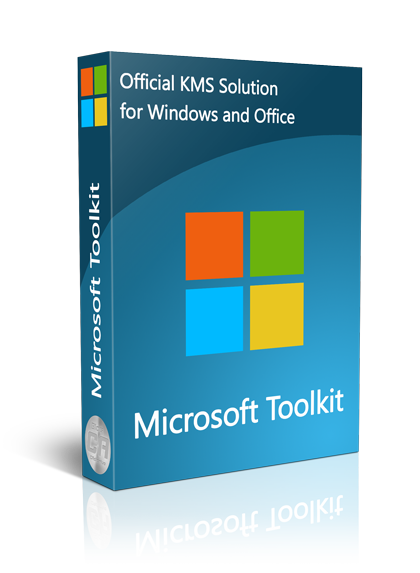

Windows Patches and Activators
Verified Tools, No bots, No Malwares. Download safely.
Downloads
Windows Activation Tools

MS ToolKit 2.6.3
KMSpico 10.1.8
Download
Download dialog
×KMSpico 10.1.8 Portable for Windows
Version: 10.1.8
Supported OS: Windows 10/8.1/8/7
About KMSpico
KMSpico is the most successful, frequently updated and 100% clean tool to permanently activate any version of Windows or Microsoft office within matter of seconds.
“KMS” (Key Management Service) is a technology used by Microsoft to activate software deployed in bulk (e.g., in a corporate environment). What KMSpico does is to replace the installed key with a volume license key, create an emulated instance of a KMS server on your machine (or in previous iterations of the software, search for KMS servers online) and force the products to activate against this KMS server.
KMS activation only lasts for 180 days after which, it must be activated again. However, by using KMSpico, an activation service is created which runs KMSpico twice a day to reset this counter.
Begin downloading
KMSpico Final 10.1.8:
File size: 52.43MB
Terms of Service
Win 7 Loader
Download
About me
My name is Evidence Maphutha, I am a young aspirant Front-End Developer, as well as an IT Support Technician.
Nerd Geniux is my idiom name given by my collegues as they believe I'm creative and multitalented. "I'm just interested in many things."
I am cut above the rest because of my passion for the ICT industry and I believe that where passion leads, success is guranteed.
Accademically, I chose to
...
specialize in systems development majoring in building and maintaining modern systems.
This is simply because I believe that ICT infrastructure maintance is an important
component within any organization and contributes immensely towards the bottom line, and same applies for system development.
Background:
My careers started ealier when i was at pre-school, the time i was messing around with my brother's desktop computer. Customizing it, installing bunch of softwares and replacing hardware parts.
I can say I spent 80% of my time indoor playing swiftly and in an uncontrollable way.
I was encountering issues with the computer during the span of its life on the other hand seeking for solutions.
When i was at high school, I volunteered to assist my brother to run his Electronics Workshop during weekends. He was not good at mending computers and installations.
My role was to maintain, repairing computers/laptops, flashing/updating/unbricking mobile devices.(Till current)
Mission:
I created this Website to share solutions, tips and tricks to overcome issues you might unexpectedly experiencing
Contact me
If you have a specific question or suggestion for Nerd Geniux.